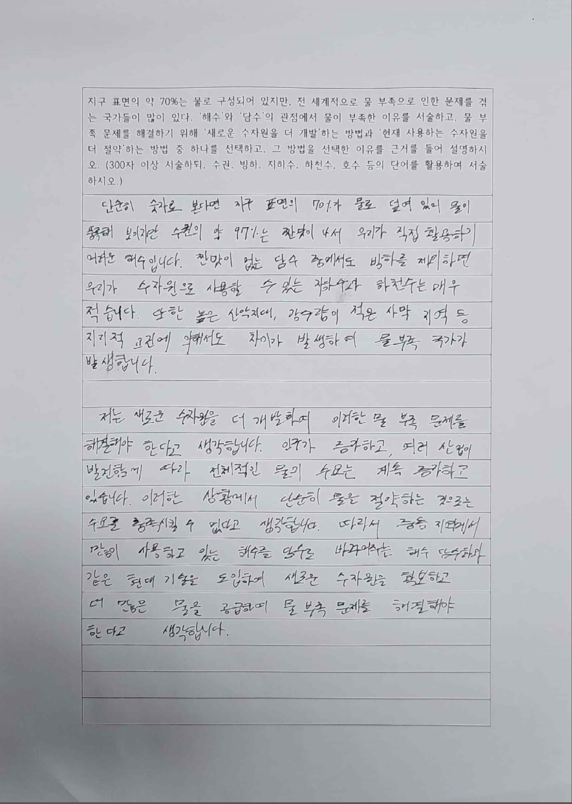

1 / 3
100%

총점
40 / 50
점
(A)
채점 결과
AI는 채점을 보조하는 역할을 하며, 채점의 최종 권한은 선생님에게만 있습니다.
작성 내용의 구체성
작성 분량 수준
작성의 창의성
AI 채점 근거 및 피드백
기본 설정으로 채점
AI 채점 근거
- 학생은 지구 온난화의 원인과 결과를 체계적으로 분석하고, 온실가스 배출 감소를 위한 국제적 협력의 필요성을 논리적으로 서술함.
- 파리기후협약, 탄소중립 정책 등 구체적인 사례를 인용하여 주장의 근거를 뒷받침함.
- 개인적 실천과 제도적 변화를 연결 짓는 다층적 관점을 보여주었으나, 경제적 비용에 대한 고려가 부족함.
AI 피드백
문항 1
지구 온난화의 원인을 과학적 근거를 들어 서술하시오.
산업혁명 이후 화석연료 사용 증가와 이산화탄소 농도(421ppm) 데이터를 정확히 제시하며 원인을 과학적으로 설명함. 온실효과 메커니즘에 대한 설명이 체계적이며, 인간 활동과 자연적 요인을 구분하여 서술한 점이 우수함.
정량적 데이터와 과학적 메커니즘을 연결하여 논증함
보완 사항 없음
문항 2
국제사회의 기후변화 대응 노력을 구체적 사례를 들어 설명하시오.
파리기후협약(2015), 한국의 2050 탄소중립 선언, EU의 탄소국경조정제도(CBAM) 등 3건의 구체적 사례를 시간순으로 제시하여 국제 공조의 흐름을 잘 보여줌. 각 사례의 목표와 의의를 명확히 서술함.
다양한 수준(국제·국가·지역)의 사례를 균형있게 활용함
각 정책의 한계점이나 비판적 관점도 함께 다루면 더 균형 잡힌 서술이 됨
문항 3
기후변화 문제 해결을 위한 개인과 사회의 역할을 논술하시오.
탄소발자국 줄이기, 대중교통 이용 등 개인 실천 방안을 제시하고, 탄소세·재생에너지 정책 등 제도적 차원과 연결 지은 점은 좋음. 다만 독창적 해결책 없이 기존 정책을 나열하는 데 그쳐 논술의 깊이가 부족함.
개인-제도를 연결하여 다층적으로 접근함
학생만의 창의적 해결 방안이나 구체적 실행 계획을 제안하면 설득력이 높아짐
참고:
경제적 비용(예: 탄소세가 저소득층에 미치는 영향)에 대한 반론도 다루면 논술의 균형이 크게 향상됩니다.
412자 / 1,024 byte
AI Assistant의 채점 결과는 부정확할 수 있습니다. 언제나 선생님의 최종 확인이 필요합니다.
선생님 직접 피드백
0자 / 0 byte